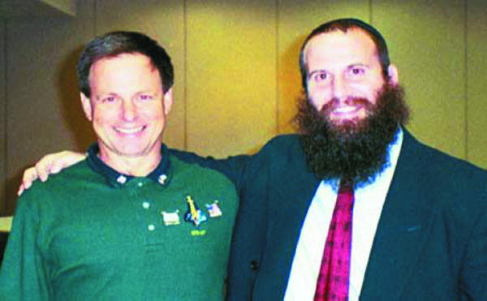

Miracle by Way of Boston
R’ Chaim Zvi Konikov, friend of Israeli astronaut Ilan Ramon a”h, shares some stories. * Ten years since the Space Shuttle Columbia was destroyed and its crew perished in February 2003.

R’ Chaim Zvi Konikov, director of Chabad of the Space Coast in Florida, arrived in Eretz Yisroel together with the remains of the Israeli astronaut, Ilan Ramon. He was there to attend the funeral and to be menachem avel the Ramon family. After they landed in Lud, he first attended a ceremony in memory of Ramon. At this time, he met the director of Chabad at the airport, R’ Nachman Maidanchik who hosted him in Kfar Chabad.
Over the weekend, R’ Konikov presided over a series of farbrengens. On Thursday night he farbrenged with the bachurim in the yeshiva in Kfar Chabad, on Friday night in R’ Maidanchek’s home along with the then director of Aguch, R’ Shlomo Maidanchik a”h, and with dozens of bachurim and Anash. In the late afternoon, he farbrenged for dozens of women.
During his visit to Eretz Yisroel, students, businessmen and others who had been in contact with R’ Konikov in Florida met with him.
R’ Konikov told about his shlichus to Florida, about the difficulties, the miracles and the Hashgacha Pratis that he constantly sees.
SALVATION IN THE BLINK OF AN EYE
R’ Konikov regularly writes to the Rebbe and the answers he opens to in the Igros Kodesh are astonishing. The following are some stories that he told. The first story sounds fantastical; it is the story of how the Chabad house came to be built:
A number of years ago, I was surprised to discover signs that a group of non-Lubavitchers wanted to open a kiruv center in the same area as the Chabad house. The Jewish community is not large and opening up another center would destroy whatever I had built over the years. I knew that in order to prevail and to make sure that those people did not encroach on my turf I had to do something outstanding and make some major commitment. I decided to put up a big building for our Chabad house.
I wrote to the Rebbe and the answer that I opened to was addressed to the N’shei Chabad of Boston. I did not see anything in the letter that pertained to me, but I don’t write repeatedly to the Rebbe unless new details arise.
My financial situation at the time wasn’t good, but since I had made the commitment I began looking for a place for a Chabad house. Within a short time, I found one. It was the best possible location as far as my target audience was concerned, but it required major renovations, i.e. tearing down the old building and building anew. Of course this entailed a lot of money and I was already in debt.
Then I got a phone call from a girl in Eretz Yisroel who had been at our Chabad house previously. She was a bit spiritual, if one could use that term, but not quite a fully practicing member of the community yet. She was living in Boston where she was doing some investing in stocks with money that she got from her mother. There in Boston, she managed to grow her portfolio, and that was where she did her banking. She was calling to tell me that she wanted to give me money for tz’daka. I immediately made the connection to the letter that I had opened to which had been addressed to the Chabad women of Boston!
I was preparing for Purim when she called again. This time, she said she was in Eretz Yisroel, but she couldn’t transfer the money to my bank account since the bank refused to do the transaction. The money was in Boston and she was in Eretz Yisroel and it wasn’t working out. She said that in half a year, around Tishrei time, she would be returning to the United States and would give me a donation then.
I got up my nerve and told her that if she couldn’t send me a check, I would personally show up to any location she specified in order to get the donation. She said she had another solution: that I should go to Boston, and when I was there, she would guide me to where to obtain signed checks and I would just have to fill in the amounts that she specified.
Well, I flew to Boston, and late at night, with her guidance, I went to a room in the attic of her home where I found the checks. She told me to fill out one check for $50,000 for that date and another check for $50,000 for the following month!
That is how the Chabad house was constructed. We increased our activities ten-fold and prevented others from moving in.
THE RIGHT ANSWER AT THE RIGHT TIME
R’ Konikov told about a meeting which took place, with all Jewish representatives in the area. It was attended by people in high public positions and key people in the Jewish community.
During the meeting, one person spoke unflatteringly about Chabad and the belief that the Rebbe is Moshiach. R’ Konikov was completely unprepared for this line of discussion and the situation wasn’t simple. He had not yet decided how to respond when a woman who serves as the president of Hadassah in Florida got up and said to that person, “Mamash, mamash, mamash!”
The man asked her what she was saying and she said, “Start attending R’ Konikov’s classes and then you will understand what ‘mamash’ is and what Moshiach is about.”
R’ Konikov concluded, “I had nothing to add. Nothing I could say could beat what they had just heard, and from such a distinguished woman no less!”
UNCOMPROMISING EMUNA
A businessman who lives in the area became interested in Torah and mitzvos, both through visiting the Chabad house and R’ Konikov’s home, but he was more in touch with people from Aish HaTorah.
This man was close to forty and not yet married. R’ Konikov suggested that he write to the Rebbe and ask for a bracha. The man did so and married and had a child. He expressed his thanks to the Rebbe and the Chabad house by giving a $300 monthly donation.
Then one day, R’ Konikov received an email in which the man informed him that he wanted to stop sending this donation. R’ Konikov did not respond. A few days later, the man called and said that since Chabad says that the Rebbe is Moshiach, he decided to stop giving his donation.
R’ Konikov told him that he had no intentions of recanting in order to receive the regular donations and the man was more than welcome to discontinue them effective immediately. Of course, he also continued to talk and explain to the man about the belief of Chassidim and the basis for it in Torah.
In the end, the man continued sending his donation and even maintains a regular connection with the Chabad house.
***
R’ Konikov had to leave for home right after Shabbos because his son was going to start putting on t’fillin. He ended the farbrengen by saying that the children are “My anointed ones,” as the Rebbe says, when we see a Jewish child we see Moshiach. Children often lead the way when it comes to spreading the Besuras HaGeula and the Goel. This son of his collected the emails of mekuravim and sent them all material on Moshiach on a weekly basis.
In whatever manner we present the message about Moshiach to the outside, said R’ Konikov, in the Chabad house, in Chabad communities, and certainly in Kfar Chabad, a commotion ought to be made about faith and trust in this, and Yechi should be said.
Beis Moshiach (staff). "Miracle by Way of Boston." Beis Moshiach, no. 872 (March 8, 2013).